





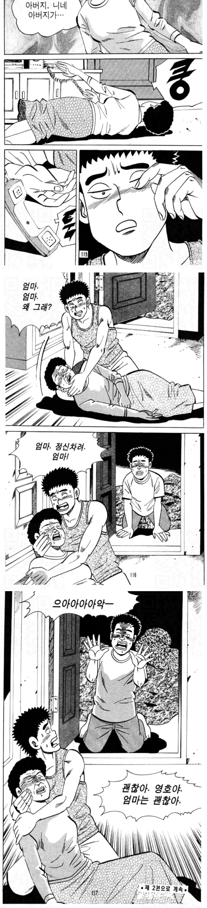

1998년
약육강식의 시대







1998년
약육강식의 시대
후에 인천이 이 씹새끼는 기어코 같은조직의 회장이 된 영탄이를 배신해서 장님만들고 엄마랑 동생도 죽이고 여주도 영탄이 앞에서 강간해서 죽이고
결국은 눈한쪽이랑 회장자리 다시찾은 영탄이에게 죽지만
평범한 삶을 꿈꾸던 영탄이에게 남은건 없음.
아이.시발새끼 찾아볼려고했는데 ㅋㅋ
옛날 창작물이 다 그렇지
군자의 복수는 10년 이라고 하면서 고구마 맥이는거 누가 그때까지 시간 끌어주냐고
진짜임??
이래서 마계 인천이구나
이게 도대체 뭐야...
집안에 인간쓰레기 하나가 자생하고
그 가족들이 인간쓰레기에게 계속 물을 공급하면
인간쓰레기는 죽지않고 계속 자라나는데
그 가족들은 점점 말라죽어간다.
근데 어쩌냐 인간쓰레기여도 가족인것을.
진짜 죽일수도 없고 너무 어렵다
이게 약육강식이랑 뭔상관이누 사람탈을쓴 짐승새끼 이야기지
이거 볼때마다 남주눈썹 ㅈㄴ이상해
구영탄은 다 저럼. 까치같은거임
아 원래 게슴츠레한 눈을 의도한거였구나 ㅇㅋ
ㅇㅇ 그르하다
마법사의 아들 코리 있잖음
알라깔라또깔라미또깔라미띠
약육강식의 시대..
인간은 바뀌지않는다 교훈주는 반전 스토리 ㅈ대네
인천이 씨발
남주 그림체가 완존 구영탄이네
고행석 작가의 만화의 주인공은 구영탄임. 영화로 치면 작품은 다르지만 배우가 같은 느낌임.
이현세 작가도 그렇고 김성모 작가도 그렇고 옛날 한국 만화 특징임.
코리는 왜 이름다름??
마녀가 어린 주인공을 유괴하고 지어준 이름이 코리인 거고, 본래 아빠가 지어준 이름은 구영탄.
당구공 종이 압축설은 구라라고 함
당구를 좀 친다는 이들에게 당구공의 재질에 대해 물어보면 열에 일곱을 종이를 압축해서 만든다고 답한다. 하지만 이는 낭설이다. 오래 전에는 코끼리 상아로 만들기도 했지만 지금은 아니다. 그렇다면 과연 재료로 무엇이 쓰일까. 안타깝게도 제대로 아는 사람은 거의 없다. 다만 추정해볼 뿐이다.
현재 세계 당구공 시장의 80%를 차지하고 있는 벨기에 살뤽사의 '아라미스 당구공'은 화학적인 합성수지에 다양한 물질을 혼합해 만든다는 정도만 알려졌다. 정확한 생산 과정이나 성분은 살뤽사에서 철저한 보안 속에 극비로 하고 있어 알 도리가 없다.
그렇다면 한 가지 의문이 더 든다. 왜 종이로 만들었다는 잘못된 상식이 퍼졌을까. 1980년대 초 국내에서 지금은 사용하지 않는 '막공'이라 불리는 국산 당구공을 만들었다. 이 당구공은 유나이트 수지라는 화학분말 재료를 사용했다. 이때 종이로 만들어졌다는 잘못된 이야기가 퍼졌다. 이후 국내에서도 품질 좋은 당구공을 만들기 위해 노력했지만 품질이 벨기에 제품의 50%에도 못 미치고 있다. 일본도 당구공 개발에 손댔다가 포기했고 중국과 대만 등지에서는 아주 저급한 당구공을 만들고 있는 수준이다. 당구공 하나만큼은 벨기에의 자랑인 셈이다.
고마워요 벨기에 맨!
고마워요 손모가지국!
코끼리상아가 아니었구나
합성수지 공 도입하기 이전엔 상아로 했는데 점점 상아 수급이 힘들어지면서 대체됐데
식스를 왜 섹스로 봤지 쭉 내리면서 보다가 섹스 보여서 멈췄네
흡입력 ㅈ되네 ㅋㅋ
개재밌게 봤네..
흡인력 미쳤네
고행석 만화 어지간한 건 다 봤는데, 이건 못 봄
마법사의아들코리티비에서어릴때봤었지
박명수..당신이 틀렸어요...! 천안이 더 좋아요!
저거 뻑치기 옛날에 양동근 주연으로 나오는 와일드카드 영화에서 처음봤는데
그 영화 볼때랑 이 만화 보는거랑 느낌 똑같음. 뭐랄까 기분 좆같고 더럽다고 해야되나
쟤네는 반장난으로 일탈하는건데 그 무기가 너무 세서 사람 뚝배기도 그냥 깨버리는 그 이질감? 같은게 너무 끔찍했어서
저당시 유행하던 링이나 주온 같은 대놓고 공포영화보다 와일드카드가 뭔가 더 섬뜩하고 더 무서웠던 기억이 남
그냥 호로씹새끼잖아..
근데 왜인지 실화같어
흑 재밌당